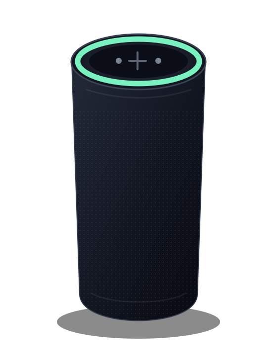
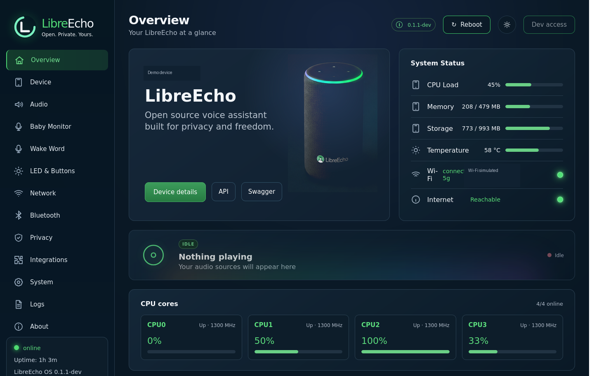
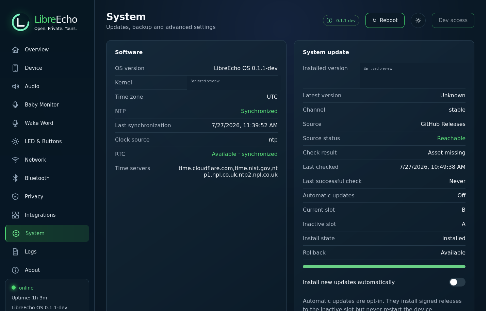
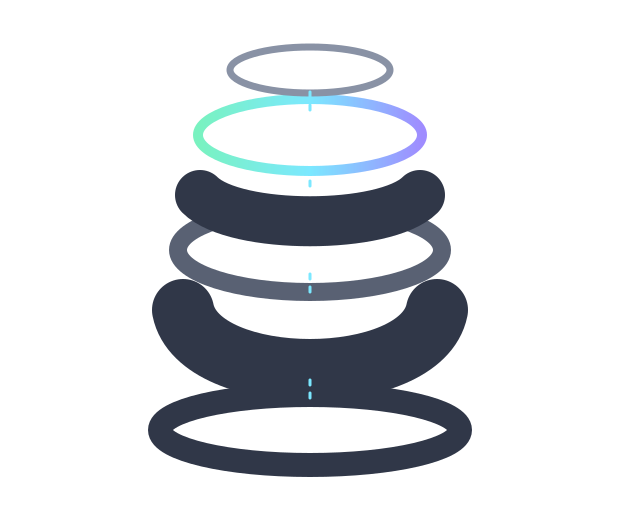

Music
AirPlay 2 and Bluetooth
Play from your iPhone, Mac or any Bluetooth device. Each speaker has its own tuned sound profile, with 24-bit output on the Echo 2nd Gen.
Open source · Community built
LibreEcho replaces the software on your Amazon Echo with an open operating system you control. Stream with AirPlay 2 and Bluetooth, play internet radio, set timers by voice, plug it into Home Assistant and manage everything from your own network — no Amazon account, no cloud and no subscription.
LibreEcho 0.14 is available now · 0.14.4 brings clearer voice pickup and a smoother light ring
Before you start: installing LibreEcho means connecting a USB cable to your Echo and replacing its software. It’s a project for people comfortable with a few tools and a USB cable — we’ll walk you through it, and you can always ask the community for help.

01 / Why LibreEcho
Millions of capable Echo speakers are tied to a cloud service their owners never chose to depend on. LibreEcho gives that hardware a second life as an open, private speaker that works for you.
Music
Play from your iPhone, Mac or any Bluetooth device. Each speaker has its own tuned sound profile, with 24-bit output on the Echo 2nd Gen.
Control
Set up and manage your speaker from a web page on your home network. Nothing to sign up for, nothing to install on your phone.
Privacy
Wake word, speech recognition and speech synthesis can all run on the speaker itself. You decide which services, if any, it talks to.
Peace of mind
Updates are cryptographically signed and installed to a spare slot, so if anything goes wrong your speaker rolls back to the version that worked.
02 / Features
An honest snapshot of each feature in the current release. Last updated .
| Feature | Status | What to expect |
|---|---|---|
| Installation, recovery and rollback | Ready to use | A guided installer sets up two copies of the system. If an update ever fails, your speaker falls back to the copy that worked. |
| Signed over-the-air updates | Ready to use | Check for updates from the control centre. Every update is signature-checked before it’s installed. |
| AirPlay 2 | Ready to use | Reliable playback from Apple devices, following the speaker’s volume. |
| Bluetooth audio | Ready to use | Stream from phones and computers with playback controls. From 0.14.3, playback is crackle-free and your phone’s volume controls the speaker. |
| Internet radio | Ready to use | Add up to 32 stations, including HLS streams such as BBC radio. |
| Web control centre and LED ring | Ready to use | Manage audio, Wi-Fi, Bluetooth, timers, updates and the light ring from your browser. |
| Timers | Ready to use | Up to 16 named timers, set by voice or from the control centre. They survive a restart. |
| Nursery | Ready to use | Baby-monitor listening in your browser, sleep sounds with a timer, and a sleep light. |
| Wi-Fi | Works, still being polished | Connects and reconnects automatically, with a recovery hotspot as a fallback. Long-running recovery after network outages is still being improved. |
| Home Assistant | Works, still being polished | Home Assistant finds your speaker through ESPHome and can use it for voice, media, announcements and timers. Deeper integration is on the roadmap. |
| Wake word and local voice | Works, still being polished | On-device wake word, speech recognition and speech synthesis in English. Accuracy is still improving. |
| Voice assistant services | Experimental | Connect Home Assistant Assist, your own OpenAI-compatible AI server or Wyoming speech services. Read the privacy section first — that service will receive your requests. |
| Volume leveling | Experimental | New in 0.14.3 and off by default. Evens out loudness between tracks; a reworked version is planned for 0.15. |
| USB music playback | Experimental | Play MP3 and Opus files from a USB stick. The Echo 2nd Gen needs a hardware modification for USB. |
| Microphone mute button | Experimental | Works as a software mute. Not yet verified as a hardware-level privacy switch — see privacy. |
03 / Supported devices
LibreEcho is built for specific hardware, so it’s worth checking your model before you begin. Devices that look similar, or share a name, can use quite different parts inside.
04 / Roadmap
LibreEcho moves in steady releases. Here’s what you can use today, what’s about to land, and the ideas we’re working towards. Dates aren’t promised — we ship when it’s ready and tested on real hardware.
Available now · 0.14.4
Echo Dot 2nd Gen support, Home Assistant via ESPHome, internet radio, the Nursery cleaner sound in 0.14.3 and, in 0.14.4, clearer voice pickup and a smoother light ring. What’s new
Planned
Play in sync across the LibreEcho speakers in your home with Sendspin, the open multi-room audio protocol used by Music Assistant.
Ongoing
LibreEcho is shaped by the people who use it. We keep adding the features owners ask for most — suggest an idea.
Exploring
Using the Echo’s seven-microphone array for things like knowing where in the room someone is speaking, and optional sound alerts such as a crying baby.
Research
Bringing LibreEcho to more Echo speakers, starting with the Echo Dot 3rd Gen, Echo 3rd Gen and Echo Plus 2nd Gen. See the device list
Latest update
A fix update for every 0.14 speaker, released on 23 October 2026. Install it from the control centre: System › System update › Check for updates.
Full details are in the 0.14.4 release notes.
Previous update
A sound-quality update for every 0.14 speaker, released on 20 October 2026. Install it from the control centre: System › System update › Check for updates.
Full details are in the 0.14.3 release notes.
Out now
0.14 is the biggest update since our first stable release. It was released on 16 October 2026.
0.13 no longer receives updates. The full list of changes is in the 0.14 release notes.
Many Echo models share the same MediaTek chips as the devices LibreEcho already runs on. Being able to unlock a device is the first step; every new model still needs its own work on audio, lights, recovery and testing before we can call it supported. This list shows where each device stands — it’s a map, not a promise.
| Codename | Product | Chip | Status | Related project |
|---|---|---|---|---|
radar / Puffin platform | Amazon Echo 2nd Gen | MediaTek MT8163V | ✅ Supported — since 0.13 | LibreEcho |
biscuit | Amazon Echo Dot 2nd Gen | MediaTek MT8163V | 🔵 Supported (experimental) — since 0.14 | Amonet mt8163-biscuit / amonet-koboreru |
sonar | Amazon Echo Plus 1st Gen | MediaTek MT8163V | 🟡 Promising — same chip family | amonet-koboreru — MT8163 platform |
rook | Amazon Echo Spot 1st Gen | MediaTek MT8163V | 🟢 Can be unlocked | Amonet mt8163-rook / amonet-koboreru |
checkers | Amazon Echo Show 5 1st Gen | MediaTek MT8163 | 🟢 Can be unlocked — a strong first candidate with a screen | Amonet mt8163-checkers / amonet-koboreru |
crown | Amazon Echo Show 8 1st Gen | MediaTek MT8163 | 🟢 Can be unlocked | Amonet mt8163-crown / amonet-koboreru |
cronos | Amazon Echo Show 5 2nd Gen | MediaTek MT8163 | 🟢 Can be unlocked | Amonet mt8163-cronos / amonet-koboreru |
donut | Amazon Echo Dot 3rd Gen — Rev 1 | MediaTek MT8516BAAA | 🟢 Can be unlocked — the most likely next chip family | amonet-koboreru |
crumpet | Amazon Echo Dot 3rd Gen — Rev 2 / refresh | MediaTek MT8516BAAA | 🟢 Can be unlocked | amonet-koboreru |
cupcake | Amazon Echo Input | MediaTek MT8516BAAA | 🟢 Can be unlocked | amonet-koboreru |
cupcake | Amazon Echo Input Portable | MediaTek MT8516 family | 🟡 Promising — same chip family | amonet-koboreru |
lidar | Amazon Echo Plus 2nd Gen | MediaTek MT8516B | 🟡 Promising — same chip family — a popular speaker | amonet-koboreru — MT8516 platform |
pascal | Amazon Echo 3rd Gen | MediaTek MT8516 | 🟡 Promising — same chip family — a high priority | amonet-koboreru — MT8516 platform |
octave | Amazon Echo Studio — 2019 | MediaTek MT8516 family | 🟡 Promising — same chip family — a high-value target | amonet-koboreru — MT8516 platform |
octave | Amazon Echo Studio — 2022 refresh | MediaTek MT8516 family | 🟡 Promising — same chip family | amonet-koboreru — MT8516 platform |
doebrite | Amazon Echo Dot with Clock 3rd Gen | MediaTek MT8516BAAA | 🟡 Promising — same chip family, closely related to donut / crumpet | amonet-koboreru — MT8516 platform |
croissant | Amazon Echo Flex | MediaTek MT8516BAAA | 🟡 Promising — same chip family | amonet-koboreru — MT8516 platform |
sapphire | Amazon Echo Link | MediaTek MT8516B | 🟡 Promising — same chip family | amonet-koboreru — MT8516 platform |
kyanite | Amazon Echo Link Amp | MediaTek MT8516B | 🟡 Promising — same chip family | amonet-koboreru — MT8516 platform |
pablo | Amazon Echo Sub | MediaTek MT8516B | 🟡 Promising — same chip family | amonet-koboreru — MT8516 platform |
douglas | Amazon Fire HD 8 7th Gen | MediaTek MT8163 | 🟢 Can be unlocked — useful for testing; not a LibreEcho target | amonet-koboreru |
karnak | Amazon Fire HD 8 8th Gen | MediaTek MT8163 | 🟡 Promising — same chip family | amonet-koboreru — MT8163 platform |
mustang | Amazon Fire 7 9th Gen | MediaTek MT8163V/B | 🟡 Promising — same chip family | amonet-koboreru — MT8163 platform |
laser | Amazon Echo 4th Gen | MediaTek MT8512 + Amazon AZ1 | 🟠 Under research — a known MediaTek bootloader technique may apply; not yet proven on Echo | Fenrir — bl2_ext research / Sprig |
brownie | Amazon Echo Dot 4th Gen | MediaTek MT8512BAAV | 🟠 Under research — not yet proven on Echo | Fenrir — bl2_ext research / Sprig |
ganache | Amazon Echo Dot with Clock 4th Gen | MediaTek MT8512BAAV | 🟠 Under research — not yet proven on Echo | Fenrir — bl2_ext research / Sprig |
cannoli | Amazon Echo Dot 5th Gen | MediaTek MT8519 + Amazon AZ2 | 🟠 Under research — not yet proven on Echo | Fenrir — bl2_ext research |
churro | Amazon Echo Pop | MediaTek MT8519 + Amazon AZ2 | 🟠 Under research — not yet proven on Echo | Fenrir — bl2_ext research |
baklava | Amazon Echo Spot 2024 / 2nd Gen | MediaTek MT8519 + Amazon AZ2 | 🟠 Under research — not yet proven on Echo | Fenrir — bl2_ext research |
maverick | Amazon Fire HD 10 (2019) | MediaTek MT8183 | 🟠 Under research — groundwork exists; unlocking not yet proven | Kaeru — MT8183 + Amazon groundwork |
persimmon | Amazon Echo Studio 2025 | Amazon AZ3 Pro platform | ⚪ New platform — different hardware from the earlier Studio | None yet |
Links point to the independent bootloader projects that make unlocking these devices possible. We’re grateful to their authors.
05 / Install
Start with the browser installer: it’s the simplest way in. If it doesn’t work for you, the installation guide for 0.14 covers the tested installer in detail, and there’s an overview of its steps below.
Start here · preview, not fully tested
The quickest way to install is straight from your web browser — there’s nothing to download or set up on your computer. Open the installer in Chrome, Edge or another Chromium-based browser on a desktop or laptop, plug in your speaker, and it takes you through each step.
It hasn’t been fully tested yet. Read the warning above before you start. If it doesn’t work for you, or you’d rather use the tested route, use the installer in the installation guide instead — the steps below describe it. Either way, please tell us how it went on Discord or in a GitHub issue.
Make sure you have an Amazon Echo 2nd Gen or Echo Dot 2nd Gen, a computer, and a USB data cable that you know works.
The installer downloads the files from the 0.14.4 release page for you and checks every one of them before it changes anything on your speaker.
Connect the speaker to your computer over USB, following the 0.14 installation guide. No shorting or soldering of special points is needed — the guide shows exactly where to connect.
A single installer checks which model you have and that the files match it, then writes LibreEcho. If anything doesn’t match, it stops before changing your speaker.
The installer restarts your speaker and opens the setup page in your browser, where you create your account and connect it to Wi-Fi.
Future updates install from the control centre — no need to connect a cable again. If an update ever fails to start, LibreEcho rolls back automatically.
06 / Demo
See what it’s like to manage a LibreEcho speaker before you install anything. The demo is a simulation that runs entirely in your browser — it doesn’t connect to a real device.


07 / Downloads
Everything you need for a fresh install or an update is attached to the release on GitHub.
Stable release
Released 23 October 2026 · for Amazon Echo 2nd Gen and Echo Dot 2nd Gen (experimental) · tag radar-puffin-v0.14.4
The latest 0.14 update. The Echo 2nd Gen picks up your voice more clearly, the control centre no longer keeps a processor core busy on speakers that have had many updates, and the light ring fades smoothly with a new start-up animation. Already on 0.14? Update from the control centre: System › System update › Check for updates. For a fresh install, download the files for your model — the installer checks that they match your device before it writes anything.
sha256sum -c libreecho-radar-puffin-v0.14.4-SHA256SUMSRun this in the folder where you saved the files. For the Echo Dot, use libreecho-biscuit-v0.14.4-SHA256SUMS instead. Every line should say OK; if one doesn’t, download that file again.
0.13 can’t update itself to 0.14 — reinstall with the 0.14 installer, which erases your settings. See the install section. Some Echo 2nd Gen speakers set up with early tools need a one-off boot-chain migration first; the installation guide explains how to tell. Older releases stay available on the releases page.
08 / Privacy
LibreEcho is designed to do as much as possible on the speaker itself. When something does leave your home, it’s because you chose a service that needs it — or it’s one of the items below, which we explain in full.
We haven’t yet verified the mute button as a hardware-level guarantee that the microphones are disconnected. Until we have, please treat it as a software mute.
Setup asks whether you’re happy to share health information and crash reports to help us fix bugs. These are optional and can be changed at any time in settings. 0.14 doesn’t send either yet; they’ll only be used in a later release, and full crash logs will only ever be sent if you choose to send one.
09 / Help and support
LibreEcho is run by volunteers, so we can’t promise response times — but there’s a friendly community and we read every report.
Our security policy covers every LibreEcho project. We aim to acknowledge reports within 7 days, assess them within 14 days and fix or mitigate confirmed issues within 90 days — on a best-effort basis.
| Release | Receives security fixes |
|---|---|
| 0.14.x | Yes |
| 0.13.x | No — please reinstall with 0.14 |
| Development builds | No |
Published advisories: none so far. Any future advisories will be listed on GitHub and in our advisory archive.
View security advisories10 / Licensing
LibreEcho’s own code and this website are open source. LibreEcho also builds on the work of many other projects, each with its own licence.
Source code, licence notices and component details for each release are published alongside it on GitHub.
The control centre is developed in the LibreEcho-UI repository.
Browse the LibreEcho source
11 / Get involved
Whether you write code, test on your own Echo, improve the docs or simply spread the word, there’s a place for you. Start with the main repository — it links to everything else.
We’re looking for maintainers and contributors
We’d love help from people who want to own a piece of the project, or just fix the thing that bugs them. Areas where help would make the biggest difference:
Keep the lights on.
Donations pay for test devices, build servers and the hours spent making LibreEcho work on real hardware. Every contribution goes straight into the next release.
Buy LibreEcho a beerJoin the community.
Chat with other LibreEcho users and contributors, ask questions and follow development.
Join LibreEcho on DiscordDonate hardware.
Spare Echo 2nd Gen or Echo Dot 2nd Gen speakers, other Echo models we’re researching, and test cables all help us support more devices. Please get in touch before sending anything.
Offer hardware